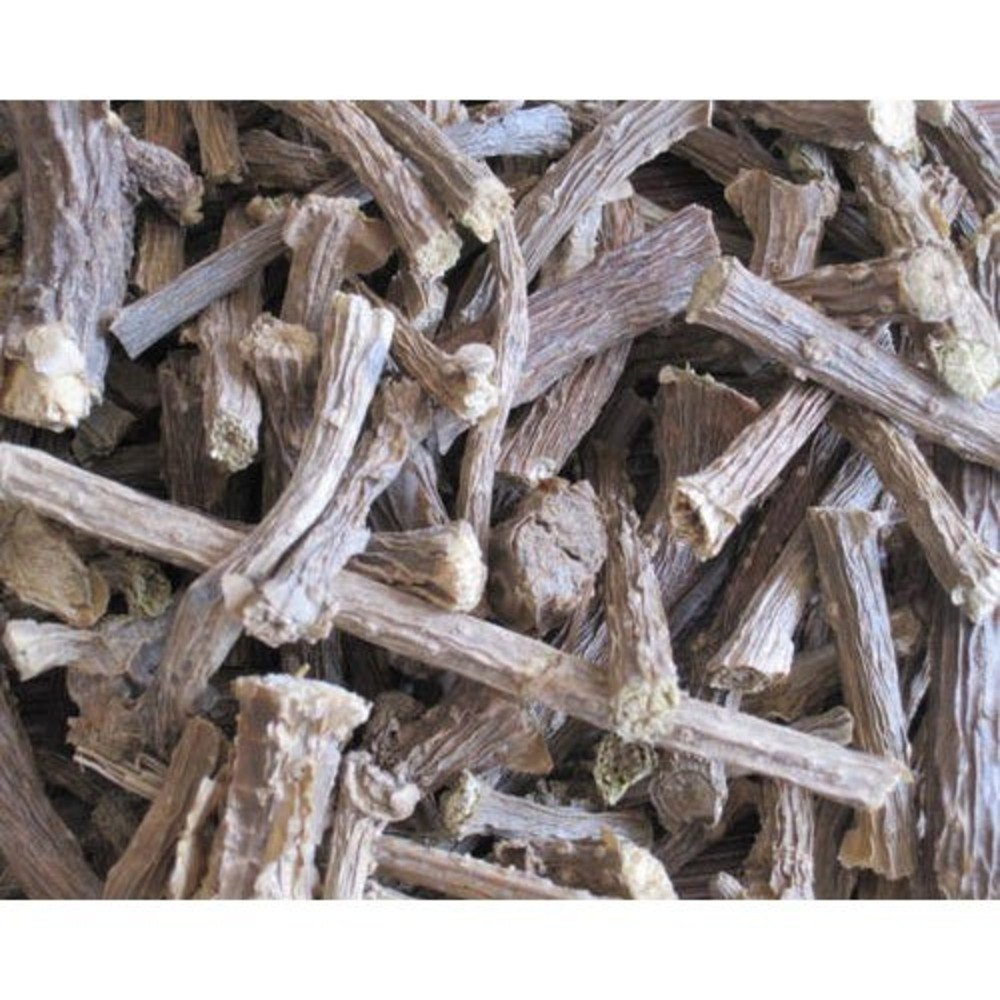

About Giloy
Giloy (Tinospora cordifolia) is a climbing shrub revered in Ayurveda for its ability to enhance immunity, detoxify the body, and balance all three doshas. JontyMart delivers high-quality, clean giloy stems ideal for health supplement manufacturing and herbal remedies.
Key Features
- 100% natural, sun-dried stems
- Rich in alkaloids and antioxidants
- Cleaned, cut, and graded for export
- Available in whole stem, cut pieces, and powder
- Packaged in moisture-proof, food-safe bags
Applications
- Used in herbal teas, capsules, and powders
- Supports immunity, digestion, and sugar balance
- Ideal for ayurvedic clinics, herbal brands, and wellness exports
Why Choose JontyMart?
- Farm-sourced and ethically harvested
- Tested for purity and free from pesticides
- Custom export documentation and labeling
- Fast delivery and flexible MOQ
Storage Instructions
Store in a dry, cool place in airtight packaging. Avoid moisture to retain medicinal potency. Best before 18–24 months from the date of packaging.